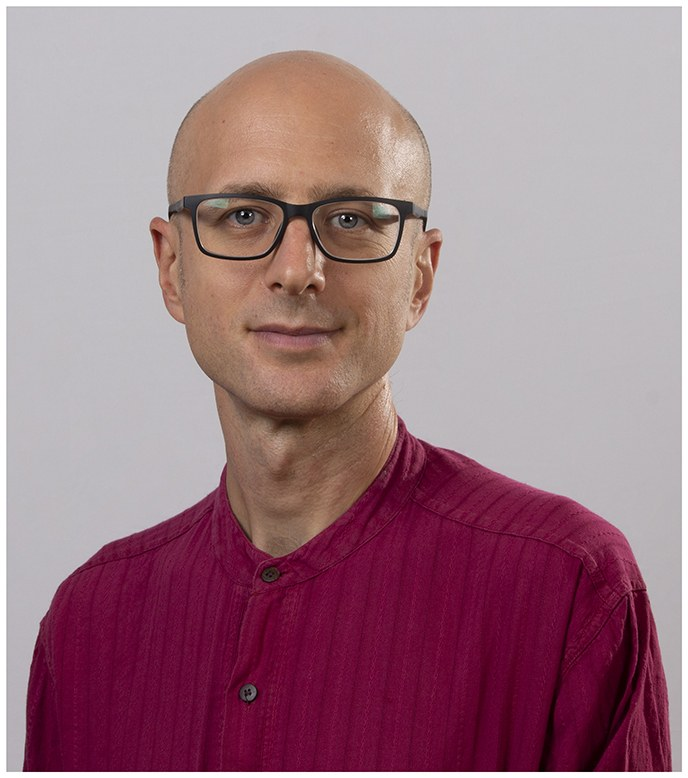
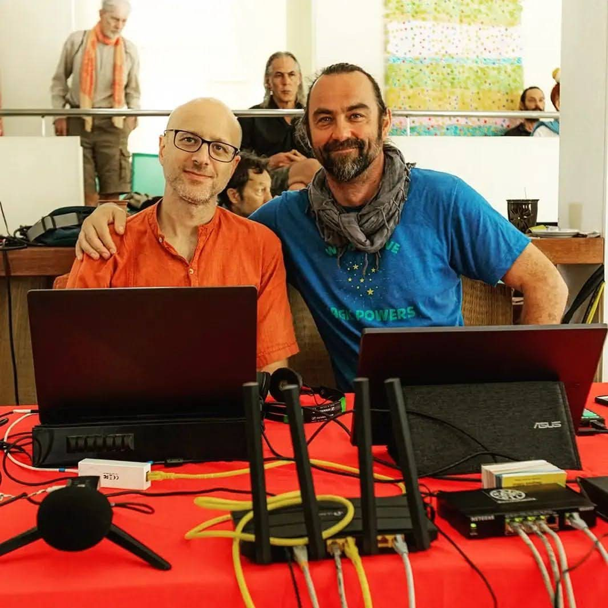
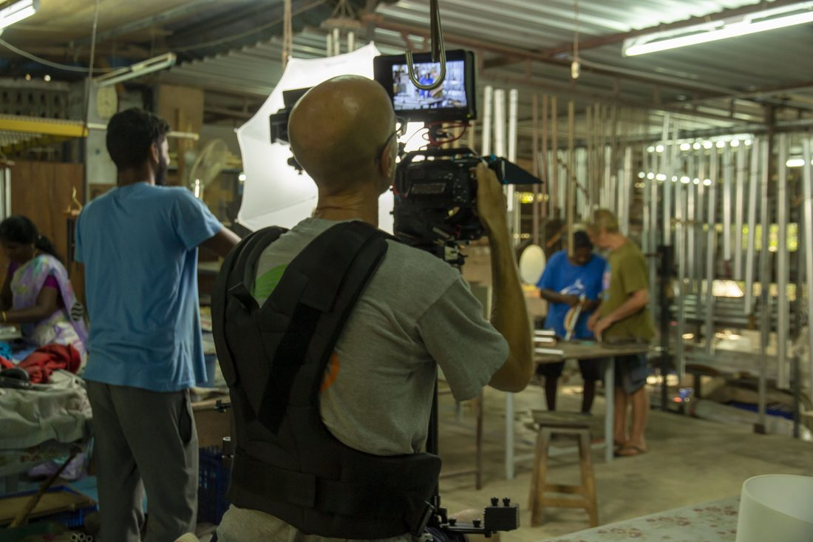
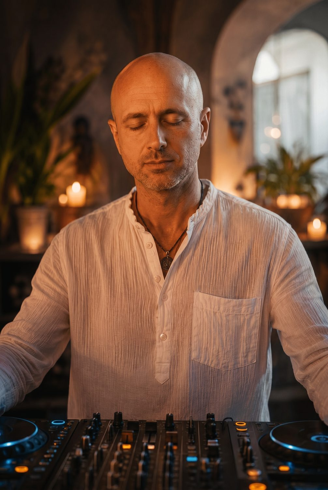

MARKOBOŠKO
Video montažer · Filmaš · Tonac · Perkusionist · DJ · Učitelj joge i ritma
Dvadeset sedam godina montaže, tona i isporuke u roku.

Odaberi što te zanima
Šest područja, svako sa svojim radovima i referencama.
Pet trakova koji teku paralelno
Karijera nije popis, nego timeline.
Prijeđi mišem ili dodirni clip za detalje
Montaža do sekunde
Sedamnaest godina montaže prema fiksnom terminu emitiranja.

Video montažer, Nova TV
Nacionalna televizija, Zagreb.
Montažer, RTL Hrvatska
Zabavni formati.
Montažer i tonac, Phenomena i PlanetB
Produkcijska kuća i marketinška agencija, Zagreb.
Montažer, Kanal Ri, Rijeka
Regionalna televizija.
Live i event produkcija
Multicam snimanje, live stream, ton na terenu i aftermovie.
Dokumentarac i autorski film
Sedam godina snimanja u Aurovilleu u južnoj Indiji.

Filmaš i tonac, Auroville
Dokumentarna i event produkcija.
Mantra Productions
Vlastita produkcija.
Nezavisna filmska montaža
Kratki i dokumentarni film na festivalima.
Iz produkcije
Priznanja
Pogledaj
DJ Mantra i puls
Od Gangesa do Amazone.

Perkusionist i student okvirnog bubnja
Učio kod perkusionističkih majstora.
Tribal Jam Orchestra
Osnivač ritmičko plesnog ansambla.
Sun Moon Yoga metoda
Učitelj joge i ritma te osnivač metode.
Mantreshwar
Autorske snimke mantri.
S pozornice
Montaža slike i sviranje ritma su isti zanat.
Marko Boško · Mantreshwar
Vizualni radovi
Grafički dizajn, plakati i generativna vizualna istraživanja.
Alati koje sam sam napisao
Ova stranica je primjer.
A1 Avid Assistant
AutoHotkey v2 alat za automatizaciju Avid montaže.
maha_transcribe
Web aplikacija za transkripciju i obradu teksta.
MA Reader
Čitač teksta u govor s isticanjem riječ po riječ.
ZET commute
Aplikacije za zagrebački javni prijevoz na GTFS podacima.
ples-duse.org
Trojezični web za event s backendom i plaćanjima.